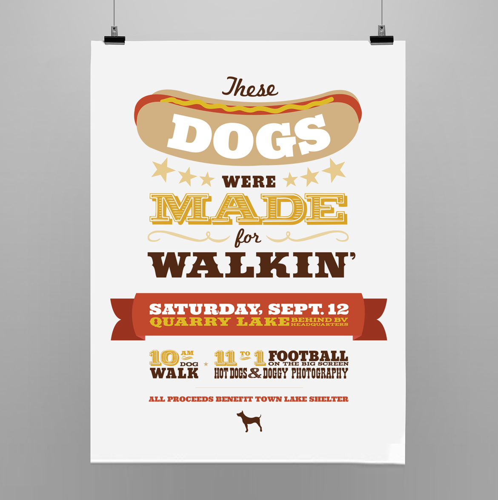
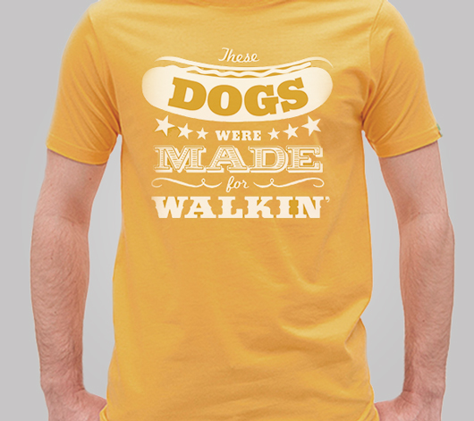
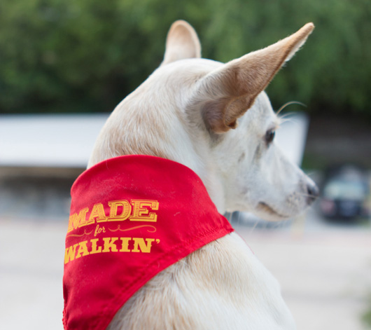

<div class="content-wrapper clearfix">

    <article class="content">

        <div class="row">
            <div class="col span_1"></div>
            <div class="col span_4">
                
                <!--  -->
            </div>
            <div class="col span_1"></div>
        </div>

        <div class="row">
            <div class="col span_6 center">
                <h1>Animal Shelter Fundraiser</h1>
                <div class="tagline">When brainstorming an event theme, sometimes you need a little help from Nancy Sinatra.</div>
            </div>
        </div>

        <div class="row">

            <div class="col span_3">
                
            </div>


            <div class="col span_3">
                
            </div>

            
        </div>

        <div class="row">
            <div class="col span_4">
                <h2>Project Details</h2>
                <p>This company-sponsored fundraiser invited partipants to bring their dogs for a walk around the lake. Afterward, hot dogs and beer were served. Mustard yellow t-shirts were given to the two-legged attendees and ketchup red bandanas for the four-legged ones. </p>
                <p>All proceeds were donated to the Town Lake Shelter.</p>
            </div>
            <div class="col span_2 right">
                <h2>My Role</h2>
                <ul>
                    <li>Concept and Copy</li>
                    <li>Art Direction</li>
                    <li>Illustration</li>
                </ul>
            </div>
        </div>    

    </article>
</div>
